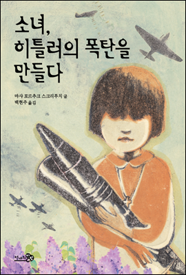

|  | 소녀, 히틀러의 폭탄을 만들다 저자.마샤 포르추크 스크리푸치/백현주 출판.천개의 바람 리다는 수용소에서 어떻게든 살아남기 위해 나이를 속이고, 어떤 힘든 일도 해내면서 쓸모 있는 아이가 되려고 노력한다. 하지만 손재주가 있는 아이로 알려져 전쟁에 쓸 폭탄을 만드는 일을 하게 되고, 리다는 절망한다. 슬프지만, 더럽지만 살아남아야 하는 이유는 오직 하나, 나치에게 빼앗긴 동생 라리사를 찾기 위해서다. 나치의 포로가 되어 폭탄을 만드는 일을 하게 된 우크라이나 소녀 리다, 그녀는 정말 엄마의 말대로 어디서든 아름다움을 만들 수 있을까? |
| 안네의 일기 저자.안네 프랑크/홍경호 출판.문학사상 우리가 미처 알지 못했던 안네 프랑크의 진짜 모습! 무삭제판으로 만나는 진솔한 소녀의 고백! 전쟁이라는 참혹한 현실 속에서도 끝까지 놓지 않았던 희망, 풋풋한 사랑의 떨림 그리고 성에 관한 솔직한 호기심까지 전쟁과 사춘기의 한복판에 선 안네 프랑크의 진짜 고백! |
| 죽음의 수용소에서 저자.빅터 프랭클/이시형 출판.청아출판사 조각난 삶의 가느다란 실오라기를 의미와 책임의 확고한 유형으로 짜 만드는 것이 프랭클 박사가 스스로 창안한 현대 실존 분석과 로고테라피의 목적이자 추구하는 바다. 그는 이 책에서 로고테라피의 발견으로 이끌어간 체험을 설명하고 있다. 잔인한 죽음의 강제수용소에서 보낸 기나긴 죄수 생활로 자신의 벌거벗은 몸뚱아리의 실존을 발견하게 된다. 부모, 형제, 아내가 강제수용소에서 모두 죽고, 모든 소유물을 빼앗기고 모든 가치를 파멸당한 채 굶주림과 혹독한 추위 그리고 핍박 속에 몰려오는 죽음의 공포를 어떻게 견뎌냈으며, 어떻게 의미있는 삶을 발견하고 유지할 수 있었을까? |